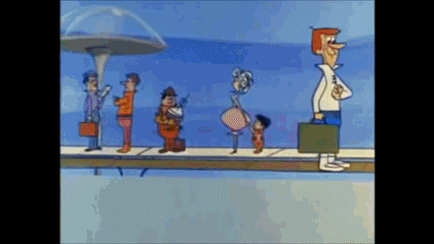
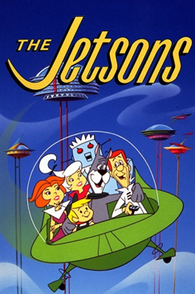
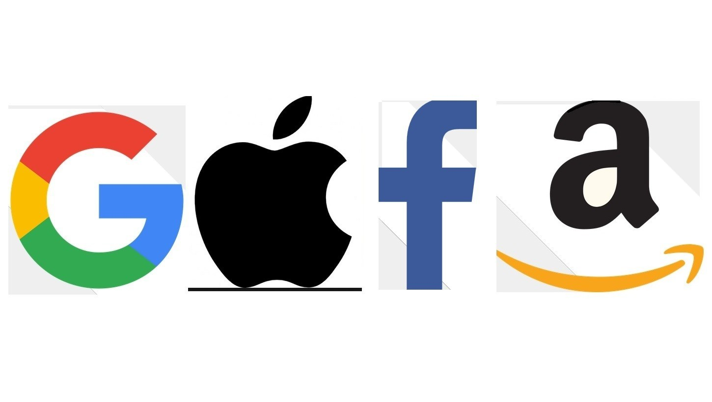

EMPREENDEDORISMO E INOVAÇÃO
Unidade 1 | Aula 1

Disciplina | Empreendedorismo e Inovação
Apresentar as principais transformações no mundo dos negócios diante do surgimento de novas tecnologias disruptivas.

Tecnologia disruptiva; Novos tendências de negócios; Mundo digital
Olá,
Nesta aula apresentaremos para você um pouco sobre as principais transformações no mundo dos negócios, principalmente após as grandes inovações nas áreas de tecnologia e comunicação.
Você já parou para pensar sobre como era o mundo 10 anos atrás?
Certamente, nos últimos 10 anos muita coisa mudou. A revolução tecnológica favoreceu a criação de diversos novos serviços e facilidades que só estavam presentes em filmes de ficção ou em alguns desenhos animados futuristas como Os Jetsons.

Neste desenho, transmitido entre a década de 60 e 80, veículos voadores e esteiras que levavam as pessoas de um lugar ao outro eram os principais meios de transporte.

Atualmente, essa já é uma realidade. Evidentemente, este tipo de veículo ainda não é acessível para boa parte da população, mas planos de empresas para produção em massa já estão em andamento. Veja no vídeo abaixo o Drone para passageiro desenvolvido na China:
Por outro lado, as esteiras para locomoção de pessoas já estão presentes em qualquer aeroporto ou estação de metrô.
Estação Ipanema. Crédito: SeLuSaVa
Muito além destes dois itens, a tecnologia transformou praticamente todas as esferas de nossa vida. São exemplos disso, as formas de comunicar, trabalhar, estudar, comprar e nos divertir. A rapidez destas transformações é um dos pontos mais marcantes de nossa era.
Se antes, um produto ou serviço levava anos para ser desenvolvido e se consolidar no mercado, nos últimos anos, as empresas crescem exponencialmente e novos produtos e serviços surgem a todo o momento, tornando obsoleta a tecnologia anterior.
Evolução dos Aparelhos Celulares
Fonte: Brasil Escola Uol.
Este cenário também alterou drasticamente a economia mundial. Empresas tradicionais que eram líderes de mercado em faturamento perderam espaço para novas empresas que desenvolveram alguma tecnologia disruptiva.
Google, Apple, Facebook e Amazon, são empresas que romperam com os antigos padrões de produtos e serviços e impactaram diretamente a vida das pessoas. Com um faturamento bilionário, essas empresas ganharam ainda mais força para desenvolverem novas tecnologias e acelerarem o processo de inovação.
Fonte: RTS
Veja o vídeo abaixo sobre o ranking das marcas mais valiosas do mundo nos últimos anos.
Perceba que, neste vídeo, Apple, Google e Amazon lideram o ranking mundial das marcas mais valiosas.
Mas, afinal, o que essas empresas têm em comum?
São empresas que, por meio da tecnologia, trouxeram inovação e facilidade para vida das pessoas e, por isso, ganhando grande importância dentro da dinâmica da sociedade. Essas empresas também foram disruptivas e consolidaram um novo modo de experiência na comunicação, compras, entretenimento dentre outras áreas.
O termo disrupção se refere a quebra ou a descontinuidade de um processo já estabelecido.
Em relação ao termo inovação ou tecnologia disruptiva podemos entender como a ruptura de um padrão referente a como a sociedade se relacionava em diversas áreas do cotidiano. Por exemplo: a maneira como assistíamos filmes foi drasticamente alterada com a tecnologia streaming*. Por meio dos novos players de vídeos como o Youtube. E não demorou muito tempo para outro processo disruptivo acontecer com a chegada da Netflix.
Fonte:fernandonogueiracosta.wordpress.com
*Streaming: fluxo de dados computacionais transmitidos por uma rede com ou sem fio que
tem como objetivo levar uma mídia digital em tempo real.
Podemos apresentar outros exemplos que alteraram a vida das pessoas, como por exemplo, o Uber e a 99 Taxi. Essas duas empresas romperam com o sistema tradicional de locomoção em transporte pago privado, antes dominado pelo sistema de Taxi.
Fonte: CuriosaMente
A tecnologia aplicada envolve conectar pessoas interessadas em oferecer o serviço de transporte com seu próprio carro e pessoas que necessitam de locomoção de forma mais ágil, comodidade e privacidade.
No setor de alimentação, podemos citar a iFood que também rompeu com a velha forma do sistema deliverys como o "disk pizza". Se antes era necessário telefonar e ficar alguns minutos aguardando ser atendido, agora, com um simples clique, você tem um vasto cardápio em suas mãos.
Essas empresas são exemplos de negócios disrupitivos frutos da transformação digital. Para saber mais sobre essa transformação, veja a entrevista de Rodrigo Giaffredo. Perceba que a transformação digital vai muito além de aplicar a tecnologia.
Rodrigo Giaffredo
Foi Líder de Transformação Agile no Centro de Tecnologia da IBM para a América Latina e é TOP VOICE LinkedIn.
O que você já sabe sobre o surgimento das Startups? Esse é um conceito muito importante para nossa próxima aula e para o desenvolvimento do seu trabalho.
Por isso, veja o vídeo abaixo, faça suas anotações e até a próxima aula!
Sugerimos que você mantenha um caderno com anotações manuscritas baseadas no material didático.
QUE TAL APLICAR O QUE APRENDEU?
Pense em uma tecnologia que seria inovadora.
Descreva quais são os meios necessários para desenvolve-la e por qual motivo ela seria considerada inovadora.
Esse é o seu primeiro passo do Projeto Integrador.
Por enquanto, não é necessário entregar suas anotações.
Copyright©2021, Faculdade OPEN. Todos os direitos reservados.
É proibida a reprodução e distribuição total ou parcial deste material, com ou sem fins lucrativos, em qualquer meio, sem prévia autorização.